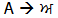
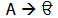

Quick Links
Article Links
None

Getting Started with Unicode
A PDF version of this document is also available.
This guide will introduce the concepts behind Unicode and how it can be used for writing Punjabi in Gurmukhi. It is designed for people who are familiar with Gurmukhi and have used Gurmukhi on a computer before.
Getting started
To get started you need to check that your computer supports Unicode and install the appropriate software to handle Gurmukhi. This is a simple process if your operating system has this ability.
Windows XP and newer versions of Windows will fully support Unicode Gurmukhi. Older versions of Windows (95, 98, ME) do not support Unicode Gurmukhi. If you have an older version of Windows, you can download Internet Explorer 6.0 which will allow you to view Unicode Gurmukhi web pages. You will not be able to type in Unicode Gurmukhi on older versions of Windows.
Details on how to enable Unicode Gurmukhi on your computer depending on your operating system are available.
After you have enabled Gurmukhi support on your computer, you should install some Unicode Gurmukhi fonts if you have not got any already. A selection of free fonts is available. We recommend you install both Saab and AnmolUni.
Finally, you should get to grips with your keyboard layout. If you are unhappy, you can download a different one or you can get the Microsoft Keyboard Layout Creator to make your own. The same keyboard layout can be used for all Unicode Gurmukhi fonts. If you change the layout, this will not affect the fonts you are using.
Unicode
Unicode is designed as a character set that allows virtually all written scripts in the world to be used on a computer. It is a monumental step forward and allows non-English languages to be used universally on computer systems.
“Unicode provides a unique number for every character, no matter what the platform, no matter what the program, no matter what the language.”
How Unicode differs from fonts
Historically, Gurmukhi has been represented using vast numbers of proprietary fonts – each with their own encoding method and keyboard layout. They worked by changing the appearance of Latin text characters so that they formed Gurmukhi. For example, with AnmolLipi the Latin capital letter ‘A’ represents Era.

Using a different font would corrupt the Gurmukhi text and make it unreadable. For example, DrChatrikWeb shows the same letter as Ura.

Unicode does away with this ambiguity. Instead, it represents Gurmukhi with its own characters and does not use Latin text. This is standardised on all computers so no matter what font you use, the text will be the same!
Unicode also separates encoding from input. This means that you can have any type of keyboard layout that you want and the underlying text will always be the same.
What you should know
There are peculiarities involved with using Unicode Gurmukhi that one should be aware of.
The concept of independent vowels is unusual in Gurmukhi. Unlike other Indian scripts, Gurmukhi constructs independent vowels by using a combination of dependent vowel signs with Ura, Era and Iri. In keeping with other Indian scripts such as Devanagari, Unicode encodes these independent vowels separately. Thus when you wish to type Iri and Bihari you must use the pre-composed Iri Bihari character.
Conjuncts such as Paireen Haha and Paireen Rara are created using a Devanagari like Halant. Thus, if you wish to type ‘ਪ੍ਰ’ you would enter Puppa (ਪ), Halant (੍) and finally Rara(ਰ).
The above two issues can be addressed using different keyboard layouts. For example, you could have a keyboard layout that converted the individual key combinations of Iri and Bihari to the pre-composed Iri Bihari character. You could also have a key that contained both a Halant and a Rara/Haha so that when it is pressed it would automatically show the Paireen form. Some keyboards may contain these features and you are free to use whichever you find more comfortable.
Characters in Unicode are entered in logical order – that is the order that they are pronounced and not how they are written. Therefore if you wish to type a syllable with Sihari in it, you must type the Sihari after the character it applies to. The computer will then reposition this to the left. For example, to type ‘ਵਿਚ’ you would enter Vava (ਵ), Sihari (ਿ) and then Chucha (ਚ).
Unicode strongly enforces the basic rules of Gurmukhi. You are therefore not able to enter character combinations that are invalid in modern Gurmukhi. For example, you cannot attach more than one vowel sign to a consonant. If you attempt to do this, a dotted circle will appear next to the second vowel that prevents it joining onto the consonant.